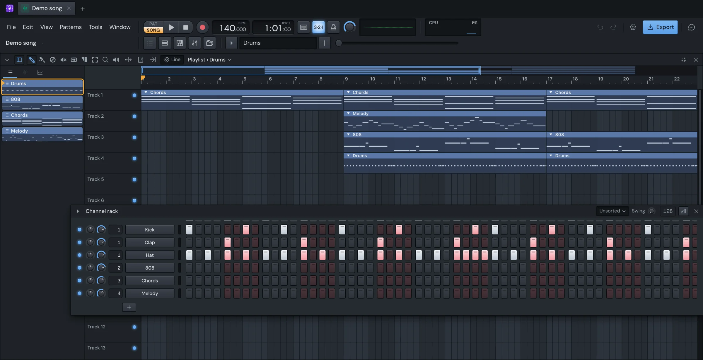

Yen Studio docs
Everything Yen Studio does, window by window. If you've used FL Studio, most of it is where you'd look for it: start with Coming from FL Studio for what's different. New to all of it? Getting started takes you from opening the app to a beat. Search finds any feature by name: press /.

Start
- Getting startedInstall Yen Studio on a Mac, open the demo song, start your own and make a first beat. Where your songs are kept and how saving works.
- Windows and the toolbarHow Yen Studio's windows move, snap and fill the screen, and what each part of the toolbar, the menu bar and the tab strip does.
- Coming from FL StudioWhat works the way FL Studio does, what's different, FL's keys on a Mac, and what Yen Studio can't do yet.
Make
- Channel rackChannels, the step sequencer, the graph editor, patterns and swing in Yen Studio's Channel rack, with its menus and keys.
- Sampler channelsEvery control in a sampler channel's settings window: the sample, precomputed effects, loop, envelopes, LFOs and the filter.
- Piano rollDraw, select, move, quantize, chop and edit notes in Yen Studio's Piano roll, with every tool, menu and key.
- PlaylistArrange your song. Tracks, pattern, audio and automation clips, the tools and their keys, the Picker, slicing, stretching and consolidating.
- BrowserAdd your sample folders to Yen Studio's Browser, then search, preview, star and send samples to channels.
- PluginsLoad your VST3 and Audio Units plugins as instruments and effects, find them, set them up and keep their settings with the song.
- AutomationMake a knob, fader or plugin parameter move over the song with automation clips: their curves, points, curve types, LFO and tools.
Record
Mix
- MixerMixer tracks, routing, faders, mute and solo, sends, effect slots, delay compensation, groups, VCA faders and the Mixer's keys.
- SidechainKey any effect slot from another mixer track, choose where the key is taken, duck a bass under a kick in two clicks, and use your plugins' sidechain inputs.
- ModulatorsMake any control follow a track's level or a channel's notes: a filter that pumps with the kick, a fader that ducks, a reverb that opens up.
- Built-in effectsPut a built-in effect in a mixer slot, and what every built-in window shares: presets, A/B, automation and the mix knob.
- Y-EQYen Studio's EQ. Drag bands on the curve over a live analyser, make any band dynamic, match one sound to another.
- Y-CYen Studio's compressor. Its curve and gain reduction on screen, modern and vintage styles, a side chain you can key from any track.
- Y-LYen Studio's limiter. Styles, true peak, a clip stage before it, and loudness meters with a target, for the end of a master or a hot vocal.
- Y-RYen Studio's reverb. Plates, rooms, chambers and halls, an era for each, a decay you shape across the bands, and a tail that ducks under the vocal.
- Y-DelayYen Studio's delay. Tape, analogue and digital echoes, single, dual, ping-pong or a rhythm you draw, in time with the song.
- Y-MultibandY-Multiband, the built-in upward and downward compressor on three bands: its knobs, its band display, its gestures and its presets.
- Y-TimeY-Time, the built-in effect for repeats, gates, tape stops and scratches: its slots, its mapping panel, its envelopes and its sync.
- Y-TuneY-Tune, the built-in pitch correction: key and scale, Detect key, Retune Speed, the pitch graph, Edit scale, Create vibrato and presets.
- Y-PanY-Pan, the built-in auto-panner: its six modes, its knobs, the Tweak panel, the rhythm editors, Analog Style and its presets.
- Y-PitchY-Pitch, the built-in pitch and formant shifter: its two wheels and their physics, the keyboard, Single and Multi, and its presets.
Finish
More
- AssistantSet up Yen Studio's assistant with your own Claude Code or Codex, pick a model, see what it can do, and undo its changes with checkpoints.
- SettingsEvery tab and option in Yen Studio's Settings: themes, fonts, where songs are saved, reports, logs, the audio device, MIDI and quality.
- Keyboard shortcutsEvery keyboard shortcut in Yen Studio, by window: the whole app, Channel rack, Piano roll, Playlist, Mixer, Browser, Y-R and the typing keyboard.
- Problems and logsWhat to do when Yen Studio has no sound, a plugin crashes or a song won't open, and how to find the logs and report a problem.
Something here wrong or missing? Tell us.